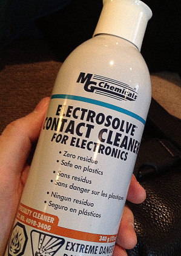

| · Why do the visuals disappear every time I put it in the car? |
| · Why is the stereo image of my MP3 messed up? |
| · I get a 'pump' error when I try to upgrade my player firmware. |
| · I get a Windows Installer or MSI error when I install Emplode. |
| · I'm having trouble with my tuner module! |
| · My tuner gets terrible reception, but the extension cable is fine. |
| · My tuner doesn't tune in the correct frequency increments. |
| · When I pause/un-pause, or sleep/wake the player, it starts in a different part of the song. |
| · Why don't fast forward and rewind work properly? |
| · When I pull the power, sometimes it plays a different song when I start it again. |
| · I can't perform an upgrade, install a logo, or install a kernel when the player is in the docking sled. |
| · Why did my player suddenly start freezing at the boot-up logo screen? |
| · Why isn't the headlight-sense dimmer working properly? |
| · Why does my player think it's at home when it's in the car? |
| · Why doesn't my player go into standby mode when I turn off the ignition? |
| · Why is there a 'thump' from my amplifiers when I turn off the ignition? |
| · Why doesn't my Rio Car work in my Mark 2 docking sled? |
| · Why is my docking connector loose? |
| · Why is my Mark 1 getting harder and harder to pull out of the sled? |
| · Why is my Mark 2 hard to pull out of the sled? |
| · Why is my warranty seal already broken? |
| · I get a 'hardware revision check failed' message when I try to upgrade! |
| · Why did ethernet and/or USB quit working after I upgraded the software? |
| · My tuner quit working after an upgrade! |
| · Why is the song count different when I shuffle? |
| · Why can't I figure out how to do searches on the player? |
| · I selected the correct title in a search, and pressed OK, but the song did not play. Why? |
| · Why does Emplode keep getting my tags wrong? |
| · Why can't I read the display in the daylight? |
| · Why am I having problems with my car alarm or my keyless entry system? |
| · My rotary knob is slipping on its shaft! |
| · What do the synchronization errors mean? |
| · The clock on my Mark 1 player does not work. |
| · The clock on my Mark 2 player does not work. |
| · The Mark (cancel) key on the Rio remote doesn't work all the time. |
| · Why is the Shuffle menu backwards? |
| · Why does my player say 'Waiting...' on the screen? |
| · Why does my player rattle when I shake it? |
| · I don't like seeing the circuitry when the sun shines on the player. |
| · I have database errors and all of my playlists disappeared! |
| · Why does Emplode say I have less disk space than I think I should have? |
| · Why does my player sound terribly distorted when I plug it into my home stereo? |
| · My remote control quit working! |
| · I have a Kenwood head unit, and its remote is controlling both players. |
| · Why doesn't Emplode work via USB on Windows? |
| · Why doesn't emplode work via ethernet on Windows XP? |
| · Emplode freezes up on 'Checking Disk Integrity'. |
| · I got an error message about 'e2fsck' at the shell prompt. What do I do to fix it? |
| · My docking sled's top edge is not 'bent'. |
| · Why doesn't my power antenna go up and down at the right time? |
| · The upper-left corner of my screen is cut off. |
| · My config.ini file went all goofy on me, and I can't edit my favorite visuals any more! |
| · My buttons and/or knob are sticking. |
| · What does the battery icon mean? |
| · I just tried to edit one of the visuals, and now my player locks up! |
| · There are glowing red lines on my display! |
| · My display has become garbled or dim. |
| · My display is blank! |
| · Why does my Mk2 player have poor stereo separation? |
| · Why doesn't my player play very high frequencies? |
| · Why doesn't the car player put out as much bass as my CD player? |
| · How do I stop it from trying to play a bad track? |
| · My player takes a long time to boot and says it is Building Music Databases. |
| · Why does it say 'No hard disk found contact support'? |
| · Some wires have pulled out of my docking connector! |
| · My handle doesn't snap back into place as well as it used to. |
| · My handle sticks in the 'open' position. Can I fix it? |
| · There is a gap between the handle and the fascia. Can I fix it? |
| · What is the proper way to remove the display board and the main board? |
| · Why can't I use USB after installing or upgrading Emplode? |
| · Why is my Mark 1 having intermittent power failure problems? |
| · Why are there pops, clicks, screeches, and stutters when I play MP3s? |
| · Half of my display is blank! |
| · In DC mode, player responds extremly slowly to button presses, and music skips. |
· My Mk2's volume knob is being jumpy!
(Entry last updated on May 22nd, 2013)When the rotary encoder on Mark 2 units gets old, it gets glitchy. The symptom is: when you try to adjust the volume, the level shoots up or down suddenly, or goes in the opposite direction from what you intended.
First, make sure you're not simply having the knob slipping on the shaft problem.
Next, make sure you're running the latest version of the player firmware. Later versions had more aggressive debouncing than earlier versions. It's also possible that there might be third-party kernel hacks available which debounce even more aggressively than the factory firmware, so make sure to check for those.
(Side note: "Debouncing" is the common name for a computer algorithm whose job is to interpret the input of a physical switch. Computers sample the input of a switch so fast, that what seems to be a simple off-on to you and me, is actually a very noisy series of tiny on and off impulses to the computer. In a fraction of a second, the switch state goes from off, to a noisy stream of on/offs, to on. It's up to the debouncing algorithm to decide when the switch is really all the way on and all the way off. Such an algorithm is a delicate trade off, especially in cases where pulse timing is critical, such as with the empeg's rotary encoder switch mechanisms.)
If the problem isn't solved by a software update, then it's just age. As the rotary encoder ages, its switch contacts get dirty and become more noisy, and the debouncing algorithm can't handle it. Hence the erratic volume behavior. There are two ways to fix this, the easy way and the hard way...
The easy way: Contact cleaner
Find thee some electronics contact cleaner and solvent, available via electronics supply stores. Here is the brand that I used:

I got that one at Digi-Key, part number 473-1147-ND. There are other brands available, they should all work and should all do the same thing. This stuff has been around for years, and you might find this under a few different names... Once upon a time, back in the days when television sets had manual analog tuner knobs, they marketed this stuff as "TV tuner cleaner". Whatever you get, make sure you're getting a cleaner/solvent (not a lubricant) make sure it's designed for cleaning electronics contacts (don't use kitchen cleaner or something), make sure the label says it's residue-free, make sure it's in a high pressure spray can, and make sure it includes the thin plastic tube that you attach to the spray nozzle.
Gently dismantle the player's front fascia, and remove the colored lens and buttons, so that you can get to the encoder. You don't need to take out the entire display board, just get enough of the fascia/lens/buttons off so you can get to the encoder. Place the colored lens somewhere safe, away from the place you will be using the spray stuff.
Using the thin plastic tube attachment that comes with the solvent spray, spray the solvent into the "neck" of the encoder, where the shaft meets the encoder's body. There is a tiny gap there between the neck and the encoder shaft. You're trying to spray a small amount of the solvent stuff into the gap. There will be a lot of overspray, it will get all over the display board, and some will get inside the player, but as long as some of it gets into the gap, you should be OK.
The stuff evaporates fast: Immediately rotate the encoder knob several turns in both directions, ideally before the stuff has had a chance to evaporate, so that you sweep the contacts inside the encoder clean. Repeat the procedure once or twice to be sure you've cleaned it good, but don't overdo it.
Let it dry for a few minutes to be sure all the stuff is gone, then test it. You should be able to test that the encoder is working smoothly again without re-assembling the fascia. If you have Hijack installed, you can try the breakout game for example. Once you're sure it's properly working, carefully and gently reassemble the fascia (check to make sure the VFD glass is clean and not stained from overspray first), and then rejoice that you were able to fix this without heating up the soldering iron.
The hard way: Replace the encoder
If the cleaner isn't enough to solve the problem, the only remaining solution is to replace the rotary encoder part. Contact Support to have it repaired.
It's possible to repair it yourself, but it's a very dangerous job because the encoder lies right next to VFD Fill Nipple, the most fragile part of the player. It's also tightly wedged next to the IR transceiver daughterboard, making navigation very tight and tricky. There is a real chance that you could damage the VFD, the display board, the IR daughterboard, or all of the above, beyond repair. And even if you can get the encoder replaced, simply pluging in the display board cable wrong will blow fuses on the motherboard which are tricky to replace. So this repair job is not recommended for novices.
WARNING:
Do not attempt to do any soldering on the player unless you have experience with soldering delicate surface-mount devices. There is a real possibility that you could permanently ruin the unit if you are clumsy, if you use too much heat, or any number of other mistakes. You're better off contacting support and having them do it for you.
|
If you still want to replace it yourself, you need the correct replacement encoder. For the Mk2a player, the encoder is an Alps EC11E-15244.
Please note that there are two kinds of rotary encoder. There is the round-shaft version of the encoder, designed to be soldered to flat surface-mount pads, which was used on the Mark 2 players. Then there is the D-shaft (keyed shaft) version, designed to be be soldered to a through-hole PCB, used on the Mark 2a players. The Mk2 knob has a looser "feel" when turning the knob, but it makes louder clicking noises. The Mk2a knob feels tighter and more solid when rotating, and also requires more force to press when pushing on the center of the button.
The two types of encoders are electronically the same, so it is possible for the Mk2a encoder to be soldered to the flat pads on a Mk2 display board... if the legs are carefully cut and bent to the correct length and position. You would need to obtain the correct keyed knob itself to fit upon the keyed shaft, however, so this can be an extremely tricky job.
It's important to remember to not try to save the old encoder when removing it. You must be prepared to cut and destroy the old encoder in the process, or else you risk ripping up the fragile PCB traces on the display board as you try to pull the encoder off in one piece. Also don't forget to carefully follow the dismantling instructions when removing and replacing the display board. For a description of how to replace the encoder, please see this thread on the Empeg BBS. Good luck! You're going to need it...
|
| · Why do I get an error message about reiserfs? |
| · Why did my player wake up in the car and start blasting music all by itself? |
| · Why does my player start doing things all by itself? |
| · Why do my remote and front panel buttons only work intermittently? |
| · Why won't the tuner scan for the next station? |
| · Why did the tuner change stations on me? |
| · Is there a way I can test the player's hard disk for sector errors? |
| · Why does it always say End of Playlist? |
| · Is there a master parts list for the car player? |
| · What do the ide_data_test messages mean? |
| · How do I fix the Daylight Savings Time dates on the player? |
| · There are vertical lines on my display! |